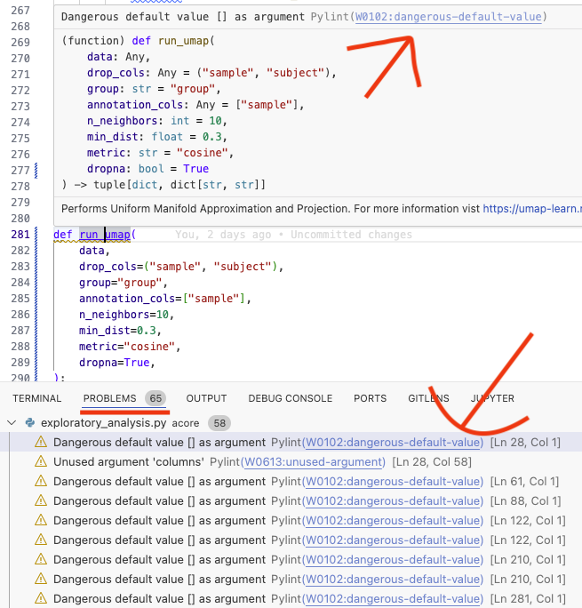
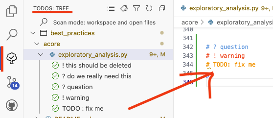

Coding (best) practices for Data Science#
Author: Henry Webel
Reviewers: Pasquale Colaianni, Jakob Berg Jespersen
Being asked to show some coding best practices for an internal retreat, I assembled some low hanging fruits in reach for everyone and some practices I learned to appreciate.
Use a formatter#
When you write code, I encourage using a formatter. black is a common choice
as it allows you to format code in a user-defined linelength consistently. It even can
break too long strings into its parts - leaving only long comments and docstrings to you
for adoption.
black or autopep8 are also available next to isort for sorting imports in VSCode as
extension, so your files are formatted everytime you save these
(link).
You can configure black and isort e.g. in your pyproject.toml file to process long strings
and enable the next release features:
[tool.black]
line-length = 90
preview = true
enable-unstable-feature = ["string_processing",]
[tool.isort]
profile = "black"
Use a linter#
Using a linter like flake8 or ruff can identify too long lines, unpassed arguments
or mutable objects as default function parameters. Tools like
Pylint in VSCode
allow you to get in editor highlighting of Code issues and links with hints on how to fix them

Using the linter you can for example find that you did not pass an argument to a function
as was fixed in this commit 18b675 in run_umap (you will need to unfold the first file to see the full picture).
Better Comments and ToDo Trees#
Better Comments
allows you to highlight comments in code using different colors
# ? warning or # ? question or # TODO . If you add ? and ! to the list of expression to list
in a
ToDo Tree
you can easily keep a list of todos in your code - allowing you to go
through them from time to time and prioritze.

Text based Notebook (percent format) with jupytext and papermill#
jupytext is a lightweight tool to keep scripts either as notebooks (.ipynb) or simpler text based file formats, such as markdown files (.md) which can be easily rendered on GitHub or python files (.py) which can be executed in VSCode’s interactive shell and are better for version control. Some tools still need ipynb to work, e.g. papermill. Therefore it is handy to keep different version of a script in sync. Otherwise one can also only use python files and render these as notebook in e.g.
jupyter lab. This is useful especially if the code is only kept for version control, but executed versions are kept in a project folder using a workflow environment (as snakemake or nextflow).
You can see an example of the percent notebook in the percent_notebooks section.
I showed how to sync a text based percent notebook and execute it using papermill
(without) specifying arguments on the commmand line:
jupytext --to ipynb -k - -o - example_nb.py | papermill - path/to/executed_example.ipynb
If you want to keep some formats in sync, you can specify that and only push one type to git
specifying e.g. a
.gitignorethe types you want to only have locally. Each folder can have a.jupytext.tomlfile to specify the formats you want to keep in sync in that folder e.g.:
# percent format and ipynb format in sync
formats = "ipynb,py:percent"
Copilot in VSCode#
Ghosttext, chats and inline chats are great ways to get suggestions on the code you are writing. You can apply for a free version as a (PhD) student or instructor. Currently alternatives with a free-tier as codium are also available.